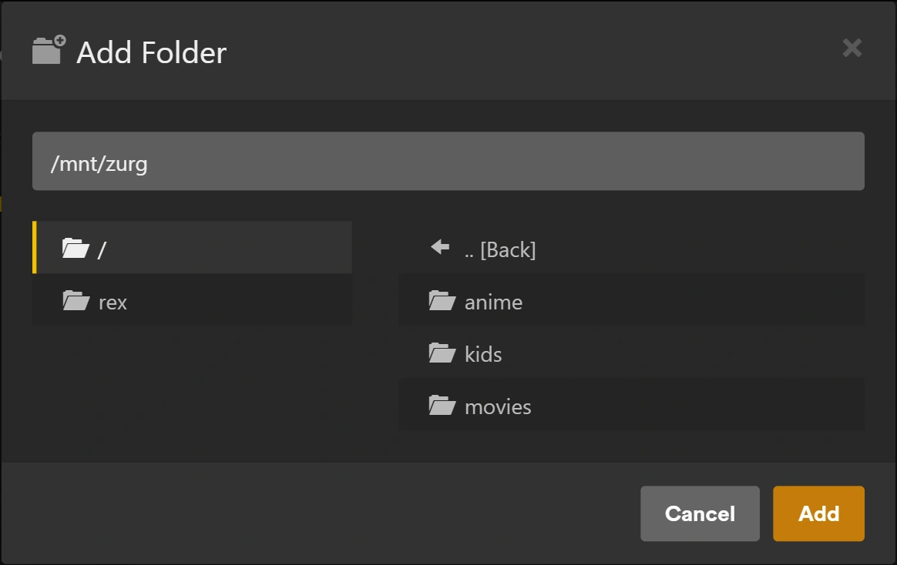

rex com zurg
rex é um servidor de mídia para os aplicativos oficiais do Plex que não guarda nenhum arquivo. Os aplicativos oficiais do Plex o veem como um servidor Plex normal. Qualquer aplicativo pode alimentá-lo (rex com seu próprio aplicativo); esta página o configura com o zurg, que envia para ele a sua biblioteca do debrid, e quando você aperta play o rex transmite o arquivo diretamente do zurg. Nada é baixado antes.
Esta página leva você do zero até assistir a um filme, passo a passo. Cada passo diz o que ele faz, por que é importante e o que você deve ver antes de seguir em frente. Se o que você vir não bater com o descrito, pare ali: o próximo passo não vai resolver.

Quatro coisas para saber antes de começar:
- O zurg é a parte que conversa com o seu serviço de debrid. Ele lista o que está na sua conta e entrega os arquivos.
- O rex é a parte com a qual os seus aplicativos do Plex conversam. Ele não guarda arquivos e não precisa de disco para a mídia. Não precisa de rclone nem de montagem.
- O zurg avisa o rex sobre si mesmo. Você informa ao zurg o endereço do rex, e o zurg faz o resto. Você nunca digita os dados do zurg no rex.
- O zurg e o DMM decidem o que cada arquivo é; o Plex descreve. O zurg pergunta ao DMM qual filme ou episódio é cada arquivo, e o rex mostra esse título com os pôsteres e resumos que os metadados próprios do Plex fornecem, assim que o rex estiver em uma conta Plex. O rex nunca adivinha a partir do nome do arquivo.
O rex é gratuito para uso pessoal (PolyForm Noncommercial): não há plano de patrocinador e você não precisa de conta para baixá-lo. A versão nightly do zurg, que este guia usa, continua sendo uma versão para patrocinadores; o rex com seu próprio aplicativo executa o rex sem ela. Só tem um celular ou uma TV box? O zurg+rex, um servidor Plex no seu celular, executa o zurg e o rex juntos nele: veja o guia para Android.
Antes de começar
Esta página precisa do rex nightly 2026.10.25 ou mais novo e do zurg nightly 2026.10.27 ou mais novo.
Passo 1. Instale o zurg
O que faz. Baixa o zurg, pede a sua conta de debrid e inicia o zurg como um serviço que volta a funcionar depois de reiniciar o computador.
Por que importa. Tudo o que o rex mostra vem do zurg. Se o zurg não conseguir ver a sua biblioteca, o rex nunca vai conseguir.
No Windows e no macOS, instale o zurg com o instalador abaixo, não no Docker Desktop. O rex lê cada arquivo do endereço que o zurg informa, e ele não consegue acessar um zurg dentro do Docker Desktop: os títulos apareceriam, mas nada tocaria.
curl -fsSL https://raw.githubusercontent.com/debridmediamanager/zurg-site/main/public/install.sh | bash
sudo loginctl enable-linger "$USER"O zurg vai para ~/zurg. A segunda linha mantém os seus serviços rodando quando você sai da sessão.
curl -fsSL https://raw.githubusercontent.com/debridmediamanager/zurg-site/main/public/install.sh | bashO zurg vai para ~/zurg. O instalador também instala o macFUSE, e o macOS pode pedir que você o permita em System Settings, Privacy & Security, seguido de uma reinicialização: zurg no macOS.
No PowerShell:
irm https://raw.githubusercontent.com/debridmediamanager/zurg-site/main/public/install.ps1 | iexO zurg vai para $HOME\zurg (C:\Users\you\zurg). O instalador também instala o WinFsp, pedindo aprovação de administrador, e inicia o zurg sempre que você fizer login no Windows: zurg no Windows.
O instalador pergunta quais serviços você usa (digite 1 para Real-Debrid) e depois pede o seu token de API. O token fica oculto enquanto você o cola.
O que você deve ver. O instalador termina com uma lista de linhas PASS e ==> zurg is installed in com a pasta do zurg. Em seguida, o zurg carrega a sua biblioteca: alguns segundos para uma conta pequena, cerca de dez minutos para uma com mil lançamentos no Real-Debrid. Abra o painel do zurg em http://<this machine>:9999: Library Size mostra a contagem dos seus itens assim que terminar.
Já tem o zurg rodando? Atualize e reinicie com cd ~/zurg && ./zurg update && ./zurg service restart (no Windows, cd $HOME\zurg; .\zurg.exe update; .\zurg.exe service restart).
Passo 2. Instale o rex
O que ele faz. Baixa o rex para ~/rex ($HOME\rex no Windows) e o inicia como serviço, com tudo que os próximos passos precisam. Os passos seguintes não precisam de reinício; só as seções opcionais mais abaixo precisam.
Por que isso importa. O rex é com quem os seus apps do Plex conversam. A primeira inicialização cria o rex.db, que guarda suas bibliotecas, tudo que o zurg envia e seu histórico de exibição.
No Linux, você pode rodar o zurg e o rex no Docker: veja
mkdir -p ~/rex && cd ~/rex
TAG=$(curl -fsSL 'https://api.github.com/repos/debridmediamanager/rex/releases?per_page=1' | sed -n 's/.*"tag_name": *"\([^"]*\)".*/\1/p' | head -1)
P=$(uname -s | tr A-Z a-z)-$(uname -m | sed 's/x86_64/amd64/;s/aarch64/arm64/')
curl -fL "https://github.com/debridmediamanager/rex/releases/download/$TAG/rex-$TAG-$P.tar.gz" | tar xz --strip-components=1No PowerShell:
New-Item -ItemType Directory -Force $HOME\rex | Out-Null; cd $HOME\rex
$tag = (Invoke-RestMethod 'https://api.github.com/repos/debridmediamanager/rex/releases?per_page=1')[0].tag_name
curl.exe -fLO "https://github.com/debridmediamanager/rex/releases/download/$tag/rex-$tag-windows-amd64.zip"
tar -xf "rex-$tag-windows-amd64.zip" --strip-components=1; Remove-Item "rex-$tag-windows-amd64.zip"Isso baixa a build mais nova do rex, normalmente uma nightly, para a sua máquina.
Descubra o IP da rede local do rex, o endereço dele na sua rede de casa. No Linux, hostname -I mostra vários: pegue o da sua rede de casa, não um que começa com 172.17. (Docker) ou 100. (Tailscale). No macOS, ipconfig getifaddr en0 mostra (use en1 se essa não mostrar nada). No Windows, ipconfig lista como IPv4 Address no adaptador Wi-Fi ou Ethernet. Esta página escreve 192.168.1.20 em todo lugar: coloque o seu no lugar. Os apps do Plex, o zurg e os seus próprios comandos falam com o rex por esse endereço.
O Plex Media Server roda na mesma máquina? Termine o comando de início do rex abaixo com --port 32500 e use 32500 onde um comando ou configuração disser 32400, incluindo a regra do firewall do Windows. O Plex já usa a porta 32400 e as portas que os apps usam para encontrar servidores; em qualquer outra porta, o rex deixa essas portas para o Plex. Assim, seus apps vão listar dois servidores com o nome da máquina: o rex é o que foi compartilhado com você, com o nome da conta nova ao lado. Quando o rex estiver na conta do Plex (
Agora, transforme ele em serviço:
Crie ~/.config/systemd/user/rex.service:
mkdir -p ~/.config/systemd/user
nano ~/.config/systemd/user/rex.service[Unit]
Description=rex
After=network-online.target
[Service]
WorkingDirectory=%h/rex
EnvironmentFile=-%h/rex/rex.env
ExecStart=%h/rex/rex
Restart=always
RestartSec=5
[Install]
WantedBy=default.targetsystemctl --user daemon-reload
systemctl --user enable --now rex
journalctl --user -u rex -fA start command do rex é a linha ExecStart, e as chaves vão em ~/rex/rex.env, uma NAME=value por linha. Depois de uma mudança, systemctl --user daemon-reload && systemctl --user restart rex reinicia o rex. journalctl --user -u rex -f mostra o log.
run.sh inicia o rex na pasta dele, e um LaunchAgent inicia o run.sh quando você faz login:
cp ~/rex/examples/run.sh.example ~/rex/run.sh
mkdir -p ~/Library/LaunchAgents
cat > ~/Library/LaunchAgents/com.rex.plist <<PLIST
<?xml version="1.0" encoding="UTF-8"?>
<!DOCTYPE plist PUBLIC "-//Apple//DTD PLIST 1.0//EN" "http://www.apple.com/DTDs/PropertyList-1.0.dtd">
<plist version="1.0"><dict>
<key>Label</key><string>com.rex</string>
<key>ProgramArguments</key><array><string>/bin/bash</string><string>$HOME/rex/run.sh</string></array>
<key>RunAtLoad</key><true/><key>KeepAlive</key><true/>
<key>StandardOutPath</key><string>$HOME/rex/rex.log</string>
<key>StandardErrorPath</key><string>$HOME/rex/rex.log</string>
</dict></plist>
PLIST
launchctl load ~/Library/LaunchAgents/com.rex.plist
tail -F ~/rex/rex.logA start command do rex é a última linha de ~/rex/run.sh, e as chaves vão em ~/rex/rex.env, uma NAME=value por linha. Depois de uma mudança, launchctl kickstart -k gui/$(id -u)/com.rex reinicia o rex. tail -f ~/rex/rex.log mostra o log.
O rex roda enquanto você estiver logado no Mac. Para um Mac que reinicia sozinho, ative o login automático (System Settings, Users & Groups). Se o firewall do macOS estiver ligado, permita o rex quando o macOS perguntar, ou adicione ~/rex/rex em Options do firewall.
Abra o PowerShell como administrador e vá para a pasta do rex com cd $HOME\rex. Primeiro crie o run.cmd, que inicia o rex na pasta dele e grava o log em rex.log. O Bloco de Notas oferece criar o arquivo:
notepad run.cmd@echo off
cd /d "%~dp0"
rex.exe 2>> rex.logSalve. Depois, libere o seu rede no Firewall do Windows para a porta do rex e para as duas portas de descoberta, e inicie o rex agora e sempre que você fizer login:
New-NetFirewallRule -DisplayName rex -Protocol TCP -LocalPort 32400
New-NetFirewallRule -DisplayName "rex discovery" -Protocol UDP -LocalPort 32410,32414
$settings = New-ScheduledTaskSettingsSet -ExecutionTimeLimit 0 -AllowStartIfOnBatteries -DontStopIfGoingOnBatteries
Register-ScheduledTask rex -Action (New-ScheduledTaskAction -Execute "$HOME\rex\run.cmd") -Trigger (New-ScheduledTaskTrigger -AtLogOn -User $env:USERNAME) -Settings $settings
Start-ScheduledTask rex; Start-Sleep 3
Get-Content rex.log -WaitA start command do rex é a linha rex.exe do run.cmd, e as chaves vão acima dela, uma set NAME=value por linha. Depois de uma mudança, Stop-Process -Name rex; Start-Sleep 1; Start-ScheduledTask rex reinicia o rex. Get-Content $HOME\rex\rex.log -Wait mostra o log.
Iniciou o rex na mão no PowerShell? Então o log fica só naquela janela, sem rex.log, e nenhuma tarefa o inicia depois de reiniciar o PC. O rex guarda o banco de dados e a reivindicação na pasta de onde ele inicia, então um rex iniciado de outra pasta é um servidor novo e sem dono. Pare com Ctrl+C e inicie de novo a partir da pasta do rex com as mesmas flags ou, melhor ainda, configure a tarefa acima.
O rex roda enquanto você estiver logado no Windows, em uma janela própria: deixe-a aberta. No PowerShell, digite curl.exe onde esta página disser curl: o curl do próprio Windows PowerShell é outro comando.
O que você deve ver. Entre as primeiras linhas:
INFO seeded rex.db: an empty library named yourhost, machine=...
INFO no source yet: a source registers itself once pointed at this server (PUT /rex/sources/{name}, docs/feed-api.md)
INFO claim state: unclaimed
INFO rex on http://192.168.1.20:32400 machine=... items=0 parts=proxyO rex se nomeia com o nome da máquina; seus apps do Plex mostram esse nome. no source yet é o esperado: o zurg ainda não foi avisado sobre o rex. Deixe o log aberto.
Passo 3. Adicione a uma conta Plex
O que faz. Registra o rex em uma conta do Plex, como você faria com um Plex Media Server de verdade, e compartilha com a sua própria conta.
Por que importa. O rex pega o nome, o pôster, a sinopse e os nomes dos episódios de cada título a partir dos metadados do próprio Plex, e só pode pedir isso depois que estiver em uma conta. Os títulos que o zurg enviou antes da vinculação recebem nome assim que ela acontece. Também faz o Fix Match funcionar, remove o aviso de "unclaimed" e é necessário antes de
Use uma conta nova do Plex para isso, não a sua. O rex não é feito pelo Plex, e o Plex pode tomar alguma medida contra uma conta que registre o rex. Mantenha a sua conta principal, com o histórico de exibição, os amigos e qualquer Plex Pass, fora disso: crie uma conta gratuita nova em plex.tv com um endereço de e-mail que você não use em outro lugar, registre o rex nessa conta e compartilhe o rex com a sua conta principal. Assim você assiste logado como você mesmo, do mesmo jeito que assistiria ao servidor de um amigo. O rex não reproduz nada enquanto essa etapa não estiver concluída.
Registre o rex na conta nova
- Entre no plex.tv com a conta nova, abra o plex.tv/claim e copie o código. Ele expira em cerca de cinco minutos.
-
Na máquina do rex (
curl.exeno Windows):curl -X POST "http://192.168.1.20:32400/myplex/claim?token=claim-xxxxxxxxxxxx" curl -s http://192.168.1.20:32400/identity
O que você deve ver. O segundo comando mostra claimed="1", e o arquivo claim_state.json existe na pasta do rex. Faça backup desse arquivo: sem ele, você precisa fazer o claim de novo com um código novo. Enquanto ele existir, o rex recusa um segundo claim.
Compartilhe com sua própria conta
- Ainda logado com a conta nova, abra app.plex.tv, depois Settings (a chave inglesa), Manage Library Access e Grant Library Access.
- Digite o nome de usuário ou e-mail da sua própria conta, escolha o servidor rex e as duas bibliotecas, Movies e TV Shows, e envie o convite.
- Saia da conta, entre como você mesmo e aceite o convite. Ele chega por e-mail e no app.plex.tv.


O que você deve ver. Logado como você mesmo, os apps do Plex listam o servidor rex ao lado dos seus próprios servidores, com as duas bibliotecas, vazias até o próximo passo. O seu histórico de exibição no rex é só seu: ele fica separado do da conta nova. Compartilhe da mesma forma com qualquer outra pessoa da sua casa.
Passo 4. Conecte o zurg ao rex
O que faz. Diz ao zurg onde o rex está. O zurg se apresenta ao rex, envia a biblioteca inteira, lê os detalhes de vídeo e áudio de cada arquivo, envia esses detalhes também e, depois, envia cada mudança conforme acontece.
Por que importa. Este é o único elo entre os dois. O rex não tem configuração para o zurg: se rex_url estiver faltando, o rex fica vazio. rex_url é sempre o endereço http:// simples do rex na sua rede, nunca um endereço HTTPS de
O zurg não inicia com a mesma chave duas vezes, e o painel do zurg grava dmm_api_key na configuração quando você digita sua chave ali. Sem chave do DMM, deixe dmm_api_key de fora.
Primeiro, verifique se a configuração do zurg já tem alguma dessas linhas:
grep -n '^rex_url:\|^dmm_api_key:' ~/zurg/config.ymlSe ela imprimir uma linha, essa chave já está definida: altere-a lá com nano ~/zurg/config.yml e deixe-a de fora do printf abaixo.
printf '\nrex_url: http://192.168.1.20:32400\ndmm_api_key: your_dmm_key\n' >> ~/zurg/config.yml
cd ~/zurg && ./zurg service restartAbra a configuração do zurg com notepad $HOME\zurg\config.yml. Se ela já tiver uma linha rex_url: ou dmm_api_key:, altere essa linha; adicione as outras no final:
rex_url: http://192.168.1.20:32400
dmm_api_key: your_dmm_keySalve e reinicie o zurg:
cd $HOME\zurg; .\zurg.exe service restartO que você deve ver. Quando o zurg carregar a biblioteca de novo, o log do zurg (~/zurg/logs/zurg.log, no Windows $HOME\zurg\logs\zurg.log) vai mostrar DMM placed N releases (sem chave do DMM: Placed N releases by their names (no DMM sponsor key)), e o log do rex vai mostrar:
INFO SOURCES zurg registered at http://192.168.1.20:9999/dav
INFO SOURCES PUT /rex/sources/zurg -> 200
INFO FEED zurg upsert: 0 created, 0 updated, 200 held, 0 unchanged, 0 rejected
INFO FEED identified "Sintel.mp4" -> movie tmdb:45745 (placed)
INFO FEED zurg upsert: 2 created, 0 updated, 0 held, 0 unchanged, 0 rejectedO rex lê cada arquivo do endereço na linha registered at, então ele precisa conseguir chegar ao zurg ali. O rex registra essa linha de novo somente quando o endereço muda.
held significa que o zurg ainda não leu os detalhes daquele arquivo. O zurg começa a lê-los assim que a biblioteca dele carrega, um release por vez, e os episódios de um season pack chegam juntos. Com uma chave do DMM, até cerca de 20 releases por minuto vêm dos detalhes armazenados no DMM. Uma biblioteca grande leva várias horas para encher. Cada título aparece no rex conforme os detalhes chegam. Qualquer coisa que você adicionar depois à sua conta de debrid aparece sozinha assim que o zurg a tiver lido.
Se não.
-
Nada no log do rex: o zurg ainda está carregando a biblioteca, o zurg está desatualizado (atualize-o como no
passo 1 ), ourex_urltem um erro de digitação.grep 'rex feed' ~/zurg/logs/zurg.log | tail -n 5mostra o lado do zurg (no Windows,Select-String 'rex feed' $HOME\zurg\logs\zurg.log | Select-Object -Last 5). Sem a linharex feed: pushing the library to ..., o zurg não leu orex_url. Járex feed: snapshot failed, retrying in ...significa que ele não consegue chegar ao rex naquele endereço. -
Um título continua
helde o zurg registraCannot probe file ...: a primeira leitura do serviço de debrid falhou. O zurg tenta de novo sozinho, mas Analyze & Tag Library, em Utilities no painel do zurg, tenta na hora.
-
Os títulos chegam, mas não aparecem linhas
identified: o zurg não conseguiu casá-los pelo nome. Comdmm_api_keydefinida, ele registraDMM refused the API key for placementquando a chave não é de um patrocinador. Nesse caso, o zurg casa pelo nome e tenta a chave de novo um dia depois, ou na hora quando reiniciar. -
Os títulos aparecem, mas nada toca: o rex não consegue chegar ao zurg no endereço
registered at. A linhaupstream faileddeQuando algo está errado verifica isso.
Executando vários zurgs (um por serviço de debrid)? Dê a cada um um nome próprio com uma linha extra, como rex_source: rd, rex_source: tb e assim por diante. Eles preenchem as mesmas bibliotecas.
Por que o DMM coloca os arquivos
DMM sabe onde cada arquivo realmente pertence. Os nomes dos arquivos muitas vezes numeram os episódios de forma diferente das listas de episódios que os apps do Plex mostram:
Um arquivo que o zurg não consegue posicionar fica sem correspondência: um filme com o título do próprio arquivo, ou um episódio de uma série com o nome do release, numerado na ordem dos arquivos. Com uma chave do DMM, o zurg pergunta ao DMM de novo um dia depois. Você também pode corrigir na mão com Fix Match em um app do Plex, logado com a conta nova que é dona do rex (o rex recusa esse arquivo para as contas com as quais ele é compartilhado). Um título que você corrigiu com Fix Match continua do jeito que você definiu.


O painel do zurg mostra o que ele fez com cada release: abra o release em Torrent Manager e veja Placement. Place again pede ao DMM mais uma vez, e um id do IMDb digitado em External ID posiciona o arquivo por esse id.

Passo 5. Assista algo
O que faz. Abre o rex em um app do Plex, do mesmo jeito que você abriria qualquer servidor Plex.
Por que importa. Este é o ponto de toda a configuração. Também comprova o último elo: o rex lendo um arquivo do zurg enquanto você assiste.
Abra um app do Plex (não um navegador) em um celular, TV ou computador na mesma rede doméstica. O rex aparece com o nome da máquina, com Movies e TV Shows. Escolha um filme e aperte play.

Em casa, não é preciso mais nada: os apps do Plex encontram o rex pela descoberta local do próprio Plex e se conectam a ele pela sua rede. Para isso, o dispositivo precisa estar na mesma rede que o rex (não em uma rede de visitantes nem em uma VLAN separada). A descoberta usa as portas UDP 32410 e 32414, então um firewall na máquina do rex precisa liberá-las (no Windows, as regras de firewall do passo 2 já fazem isso). O rex responde à descoberta quando usa a porta 32400. Se você mudou o rex para a 32500 porque o Plex roda na mesma máquina, a descoberta fica com o Plex, e os apps encontram o rex pela conta do Plex com a qual ele está http://192.168.1.20:32400/web não é o Plex Web: o rex não tem app web próprio, e essa página só informa se o rex foi reivindicado e onde assistir.
O que você deve ver. Pôsteres, títulos e anos como em qualquer servidor Plex, e o filme toca.
Duas coisas que você pode encontrar:
- "yourhost server is unclaimed and not secure". Um app do Plex diz isso sobre qualquer servidor que não está em uma conta Plex, e o rex não reproduz nada até que ele esteja em uma. Faça o
passo 3 . Não aperte Claim it now enquanto estiver logado como você mesmo: isso registra o rex na sua própria conta. - "This server is not powerful enough to convert video". Se todos os títulos falham em todos os dispositivos, olhe o log do rex logo depois que você aperta Play:
upstream failedou502ali significam que o rex não consegue alcançar o zurg, e o FFmpeg não resolve isso. A linhaupstream faileddeQuando algo dá errado diz o que fazer. Se só alguns arquivos falham, muitas vezes só em um navegador, o dispositivo não consegue reproduzi-los como estão, em geral por causa de som AC3 ou DTS. Os apps do Plex em TVs e celulares reproduzem a maioria dos arquivos sem conversão. Para reproduzir tudo em todos os lugares, configure aConversão de vídeo .
As pastas do zurg além de movies e shows, como anime, não precisam de nada: cada arquivo vai para Movies ou TV Shows conforme o que o zurg diz que ele é. Um arquivo que o zurg não consegue identificar como episódio fica em Movies.
Para dar a uma dessas pastas bibliotecas próprias, adicione rex_movies abaixo dela no config.yml do zurg para uma pasta de filmes, rex_shows para uma pasta de séries, e os dois somente quando ela tiver ambos, ao lado de seus filtros, e depois reinicie o zurg como no rex_shows gera uma biblioteca de TV vazia. O DMM coloca parte dos arquivos de uma pasta como filmes e parte como episódios, e o tipo sem título próprio vai para Movies ou TV Shows:
directories:
anime:
rex_shows: Anime
rex_movies: Anime Movies
films:
rex_movies: FilmsQuando o zurg carregar, o rex cria Anime, Anime Movies e Films e move para elas o que já estava exibindo vindo de anime, do jeito que estava: histórico de exibição, Fix Match e edições incluídos. Um Plex Web aberto lista essas bibliotecas de imediato em More na barra lateral, onde você pode fixá-las. Compartilhe-as com a sua conta como no rex_shows ou rex_movies da configuração do zurg depois, a biblioteca que o rex criou para ela fica, vazia ou não: apague-a em um app do Plex, logado com a conta nova. Se uma biblioteca não aparecer, o log do zurg ou o do rex diz por quê.

Apagar em um app do Plex apaga da sua conta debrid
Logado com a conta nova, Delete em um filme ou episódio também apaga o arquivo no zurg, e o zurg remove o torrent da sua conta debrid assim que nenhum dos arquivos dele sobrar. As contas com as quais o rex está compartilhado, a sua inclusive, não podem apagar. Para desligar a exclusão: no app.plex.tv, logado com a conta nova, abra Settings, a Library do servidor rex, Show Advanced, desmarque Allow media deletion e salve. O rex então recusa todas as exclusões.

Um título que sai da sua conta debrid pelo outro lado, removido lá ou pelo zurg, vai para a lixeira da biblioteca no rex, como faria no Plex: ele fica, indisponível, com seu histórico de exibição, e volta como estava se o zurg o tiver de novo. Empty Trash na biblioteca o remove para sempre, e Empty trash automatically after every scan (Settings, Library) faz isso sozinho; essa opção vem desligada.
Faça backup do rex.db na pasta do rex (ele guarda sua biblioteca, seu histórico de exibição e o login do zurg, então mantenha-o privado) e, depois que existirem, do claim_state.json e do rex-direct.json (a reivindicação e a chave do certificado do rex-direct):
sudo apt install -y sqlite3 # once, on Linux; macOS has it
mkdir -p ~/rex-backup
sqlite3 ~/rex/rex.db ".backup $HOME/rex-backup/rex.db"
cp ~/rex/*.json ~/rex-backup/O Windows não tem sqlite3, então pare o rex por um momento e copie o rex.db junto com os dois arquivos ao lado dele que começam do mesmo jeito:
Stop-Process -Name rex; Start-Sleep 1
New-Item -ItemType Directory -Force $HOME\rex-backup | Out-Null
Copy-Item $HOME\rex\rex.db*, $HOME\rex\*.json $HOME\rex-backup
Start-ScheduledTask rexNo Docker, os arquivos ficam em ~/rex/config, legíveis apenas pelo root. Faça o backup de dentro do container com docker exec rex sqlite3 /config/rex.db ".backup /config/rex.db.bak", depois mkdir -p ~/rex-backup && sudo cp ~/rex/config/rex.db.bak ~/rex/config/*.json ~/rex-backup/.
Pronto, você terminou. As seções abaixo são opcionais.
Use fora da sua casa (opcional)
O que faz. Dá ao rex um endereço HTTPS que os apps do Plex fora de casa conseguem acessar, e informa o plex.tv sobre ele.
Por que importa. Fora de casa, o app.plex.tv só se conecta a um endereço HTTPS, e os outros apps do Plex dão preferência a esse tipo. Um servidor Plex de verdade pode recorrer ao relay do Plex; o rex não consegue, então você escolhe como ele será acessado. O rex precisa ser /rex/ (
Plex Pass. O Plex Web reproduz fora de casa sem um Plex Pass ou Remote Watch Pass em nenhuma das contas. Os outros apps do Plex não foram testados fora de casa.
Seja qual for a opção escolhida, cada byte que você assistir fora de casa sai pela velocidade de upload da sua conexão de casa. Um upload de 20 Mbit/s aguenta bem um 1080p WEB-DL, mas não um remux.
Qual usar
Não recomendado:
- Túnel da Cloudflare. Cada byte passa pela Cloudflare, que também descarta o
Rangeda primeira leitura de um arquivo, então cada início de reprodução baixa o arquivo inteiro do seu serviço de debrid. - Tailscale Funnel, ngrok e outros túneis hospedados. Eles limitam a largura de banda ou o volume mensal de dados, que um filme consome rapidamente. O Tailscale Funnel também publica todo o rex, inclusive a API para a qual o zurg envia dados: qualquer pessoa na internet poderia adicionar ou apagar itens dessa biblioteca.
- Liberar a porta 32400 sem rex-direct ou sem um certificado próprio. Os apps do Plex receberiam um endereço HTTP simples, que o app.plex.tv recusa.
rex-direct
rex-direct é a resposta do DMM para o plex.direct, e vem ativado por padrão. No seu roteador, encaminhe a porta 32400 (TCP) para a máquina do rex. É só isso, sem precisar reiniciar nada.
Depois de reivindicado, o rex recebe dois nomes do DMM: <hash>.rex-direct.debridmediamanager.com, apontando para o IP público da sua casa, e lan.<hash>.rex-direct.debridmediamanager.com, apontando para o IP da LAN do rex, com um certificado para os dois. O primeiro certificado leva alguns minutos; o log do rex avisa que ele está sendo emitido e depois mostra cada nome em uma linha rex-direct:. Um novo IP de casa e as renovações de certificado são detectados automaticamente. Uma conta do Plex pode ter até dez nomes rex-direct. Em casa, os apps do Plex, inclusive o app.plex.tv, podem usar o nome lan., que chega ao rex direto pela sua rede, então o encaminhamento de porta só é necessário para quando você estiver fora de casa. No app.plex.tv, permita o acesso a dispositivos na sua rede local quando o Chrome perguntar; caso contrário, ele usa o nome público, que precisa do encaminhamento de porta.
Se o seu roteador encaminhar uma porta externa diferente para o rex, adicione a chave REX_DIRECT_PORT=<that port> como mostra o
rex-direct sobre IPv6
Para uma conexão sem IPv4 público (CGNAT ou DS-Lite) que tenha IPv6. Quando o DMM se conectar ao rex pelo endereço IPv6 e encontrar o mesmo servidor ali, ele também aponta o nome rex-direct do rex para esse endereço. Você precisa do rex nightly 2026.11.08 ou mais recente e, no Docker, do modo de rede host.
O IPv6 não tem port forward nem port mapping: o rex precisa usar a mesma porta por dentro e por fora, então deixe REX_DIRECT_PORT sem definir. No firewall do seu roteador, permita conexões TCP de entrada na porta 32400 para a máquina do rex pelo IPv6. O rex publica o seu IPv6 um minuto depois de iniciar (ou de ser reivindicado) e, depois, a cada 6 horas. Por isso, adicione a regra antes de iniciar o rex, ou reinicie o rex depois de adicioná-la. Um minuto depois, mais ou menos, o log dele mostra os dois endereços:
rex-direct: https://<hash>.rex-direct.debridmediamanager.com:32400 -> <IPv4> and <IPv6>Se nenhuma linha com and <IPv6> aparecer em alguns minutos, o DMM não conseguiu alcançar o rex por IPv6. Verifique a regra do firewall e se o rex no Docker está usando o modo de rede host. No Windows, o rex publica o endereço IPv6 temporário do Windows, que o sistema troca cerca de uma vez por dia. Para desligar os endereços temporários, rode netsh interface ipv6 set privacy state=disabled em um PowerShell como administrador e depois reinicie o rex para que ele publique o endereço estável. O <IPv4> dessa linha é o endereço compartilhado da sua operadora e não alcança o rex, então os dispositivos de onde você assiste também precisam de IPv6. A maioria das redes móveis tem IPv6. Uma rede de hotel ou de escritório só com IPv4 não consegue alcançar o rex dessa forma.
Tailscale serve
Instale o Tailscale na máquina do rex e nos dispositivos em que você assiste, entrando na mesma conta. Depois, na máquina do rex:
sudo tailscale serve --bg 32400No Windows, execute no PowerShell como administrador, sem sudo. No macOS, use a ferramenta de linha de comando do app do Tailscale, sem sudo.
Ele mostra o endereço, por exemplo https://myhost.tailnet.ts.net. Informe-o ao rex com :443 no final: acrescente --announce-url https://myhost.tailnet.ts.net:443 ao final do comando de inicialização do rex do
O Tailscale conecta seus dispositivos entre si diretamente, então o stream não passa pelos servidores do Tailscale, exceto em redes que bloqueiam isso.
Caddy
Você precisa encaminhar a porta 443 do seu roteador para a máquina do rex, e também de um nome para o IP da sua casa:
- Seu próprio domínio: um registro
A, comorex.example.com, apontando para o IP da sua casa. - Sem domínio: use
1-2-3-4.sslip.iocom os números do seu IP público (curl -s ifconfig.memostra ele). Ele sempre resolve para esse IP. Se o seu IP mudar, atualize o nome.
Instale o Caddy e dê a ele este Caddyfile (/etc/caddy/Caddyfile com o pacote do Caddy para Linux; no macOS e no Windows, um arquivo chamado Caddyfile em uma pasta só dele, que o caddy run lê dentro dessa pasta):
rex.example.com {
respond /rex/* 403
reverse_proxy 192.168.1.20:32400
}respond /rex/* 403 mantém fora da internet a API para onde o zurg envia dados. O zurg ainda acessa ela em http://192.168.1.20:32400. Depois, recarregue o Caddy (sudo systemctl reload caddy com o pacote para Linux). No macOS e no Windows, em vez disso, inicie o caddy run na pasta dele e deixe rodando do jeito que o
O Caddy busca um certificado quando carrega o arquivo e o renova sozinho. Termine o comando de início do rex com --announce-url https://rex.example.com:443 e reinicie o rex.
Um VPS pequeno
Para uma conexão sem IP público nenhum, ou quando você assiste em redes sem IPv6: o VPS passa a carregar todos os streams, no lugar do
Você precisa do IP do VPS (1.2.3.4 abaixo), das portas 443, 80 e 7000 abertas nele, e de uma string aleatória longa para o túnel (openssl rand -hex 32).
No VPS, instale o frp (o programa frps) e o Caddy. Crie o frps.toml:
bindPort = 7000
auth.token = "your-long-random-string"
proxyBindAddr = "127.0.0.1"proxyBindAddr mantém a ponta do túnel no loopback do VPS, então a internet só chega ao rex através do Caddy. Crie o /etc/caddy/Caddyfile, usando o IP do VPS como 1-2-3-4.sslip.io (um nome gratuito que sempre aponta para esse IP) ou o seu próprio domínio apontando para ele:
1-2-3-4.sslip.io {
respond /rex/* 403
reverse_proxy 127.0.0.1:32400
}respond /rex/* 403 impede que a API para a qual o zurg envia dados fique acessível pela internet. Inicie frps -c frps.toml como um serviço e execute sudo systemctl reload caddy.
Na máquina do rex, instale também o frp (o programa frpc) e crie o frpc.toml:
serverAddr = "1.2.3.4"
serverPort = 7000
auth.token = "your-long-random-string"
[[proxies]]
name = "rex"
type = "tcp"
localIP = "192.168.1.20"
localPort = 32400
remotePort = 32400Rode como serviço: no Linux, por exemplo, ~/.config/systemd/user/frpc.service com ExecStart=%h/frp/frpc -c %h/frp/frpc.toml e Restart=always; no macOS e no Windows, inicie frpc -c frpc.toml do mesmo jeito que o --announce-url https://1-2-3-4.sslip.io:443, adicione a chave REX_DIRECT_URL=off (atrás de CGNAT, o IPv4 do nome rex-direct não alcança o rex, então o plex.tv não deve listá-lo) e reinicie o rex. Com isso, o app.plex.tv em casa também passa pelo VPS; os outros apps do Plex em casa continuam se conectando ao rex diretamente.
O que você deve ver
curl -s https://lan.<hash>.rex-direct.debridmediamanager.com:32400/identitymostra uma página XML curta com o machineIdentifier do rex em um computador em casa; o curl não mostra nada quando o endereço ou o certificado dele está errado. Use o seu próprio endereço: o rex registra ele na inicialização como rex-direct: https://lan.<hash>.rex-direct.debridmediamanager.com:32400 -> 192.168.1.20 (LAN) (com REX_DIRECT_URL=off não aparece nenhuma linha). Abra o seu endereço externo com /identity no final, no navegador de um celular com o Wi-Fi desligado: com o rex-direct, use a outra linha rex-direct: que o rex mostra; com o Tailscale serve, use https://myhost.tailnet.ts.net, que o celular só abre com o Tailscale ligado. Ela mostra uma página XML curta, sem aviso de certificado.
Se o celular falhar, a porta não está encaminhada (ou,
O log do rex mostra os endereços que ele anuncia:
INFO heartbeat every 600s for machine ... -> https://myhost.tailnet.ts.net:443,http://192.168.1.20:32400O rex imprime isso a cada inicialização. Problemas aparecem depois como heartbeat failed ou announced but NOT visible. Caso contrário, o servidor lista esses endereços no plex.tv, e o app do Plex fora de casa escolhe o que conseguir alcançar. Se o rex registrar waiting for a claim, faça antes o
Seu histórico de exibição de outro servidor Plex (opcional)
Já assistiu no outro servidor Plex antes? Depois que sua biblioteca estiver no rex, Traga seu histórico de exibição copia o que você assistiu, onde parou e suas avaliações com estrelas de lá, para cada pessoa separadamente.
Sonarr, Radarr e Bazarr (opcional)
rex não precisa de mount, mas Sonarr e Radarr precisam: eles importam para o mount do zurg, em __magic__. Configure-os com o zurg seguindo Sonarr e Radarr para torrents ou para Usenet; o que eles baixam chega ao rex pelo zurg, como qualquer outro conteúdo. As legendas que o Bazarr salva junto a essas importações aparecem no rex em cerca de um minuto: Legendas com Bazarr. Um único zurg pode reunir sua conta de debrid e seu Usenet em uma só biblioteca (Usenet), e duas cópias de um mesmo filme são um único título no rex, com uma versão para cada uma.
Convertendo vídeo (opcional)
O que faz. Faz o rex converter o que um dispositivo não consegue reproduzir, do mesmo jeito que o Plex faz.
Por que importa. Sem ele, um dispositivo que não consegue reproduzir um arquivo como ele está mostra "This server is not powerful enough to convert video". Navegadores são os que mais dão esse erro, por exemplo com som AC3 ou DTS. Quando todos os títulos falham em todos os dispositivos, a causa é outra: veja o
Instale o jellyfin-ffmpeg 8, e não o ffmpeg que vem no seu sistema. Ele é a versão com a qual o rex é medido e é o único que converte todos os arquivos Dolby Vision, faz tonemapping de HDR na placa de vídeo e desenha as legendas por lá. Outro FFmpeg converte vídeo comum, e o log do rex diz o que falta nele (o do próprio Ubuntu 22.04 também erra o ponto de busca em alguns segundos). O rex encontra o pacote sozinho.
O pacote vai para /usr/lib/jellyfin-ffmpeg, ao lado de qualquer outro FFmpeg. A primeira linha escolhe a versão certa para o seu sistema: existem builds para Ubuntu 22.04, 24.04 e 26.04 e Debian 12 e 13, em amd64 ou arm64. Em qualquer outro sistema, o curl para com um erro.
DEB=jellyfin-ffmpeg8_8.1.3-1-$(. /etc/os-release; echo "$VERSION_CODENAME")_$(dpkg --print-architecture).deb
curl -fLO "https://github.com/jellyfin/jellyfin-ffmpeg/releases/download/v8.1.3-1/$DEB"
sudo apt install -y "./$DEB" && rm "$DEB"
systemctl --user restart rexEm outro Linux, extraia o build portátil do jellyfin-ffmpeg em ~/rex/ffmpeg, onde o rex procura, e reinicie o rex. Ele usa o driver de vídeo do seu próprio sistema, então em um sistema mais antigo ele converte só no processador. Use o pacote sempre que houver um para a sua distro.
B=$( [ "$(uname -m)" = aarch64 ] && echo linuxarm64 || echo linux64 )
mkdir -p ~/rex/ffmpeg && curl -fL "https://github.com/jellyfin/jellyfin-ffmpeg/releases/download/v8.1.3-1/jellyfin-ffmpeg_8.1.3-1_portable_${B}-gpl.tar.xz" | tar xJ -C ~/rex/ffmpegCom uma placa de vídeo Intel ou AMD, rode também sudo usermod -aG render "$USER" e reinicie a máquina para que o serviço pegue o grupo. Em um LXC, passe a GPU para dentro dele. A placa deixa a conversão rápida; sem ela, o rex usa o processador. Sem chip Intel ou AMD, o rex também tenta o encoder de uma placa NVIDIA. Na Intel, sudo apt install intel-opencl-icd também faz a conversão de HDR e Dolby Vision na placa, em tempo quase real para 4K em uma Intel pequena. Sem ele, esses arquivos são convertidos no processador, e uma Intel de baixo consumo não dá conta disso em tempo real em 4K.
O build portátil vai para ~/rex/ffmpeg, onde o rex procura:
B=$( [ "$(uname -m)" = arm64 ] && echo macarm64 || echo mac64 )
mkdir -p ~/rex/ffmpeg && curl -fL "https://github.com/jellyfin/jellyfin-ffmpeg/releases/download/v8.1.3-1/jellyfin-ffmpeg_8.1.3-1_portable_${B}-gpl.tar.xz" | tar xJ -C ~/rex/ffmpeg
launchctl kickstart -k gui/$(id -u)/com.rexEm um Mac, o rex sempre converte no processador: ele não tem como usar a placa de vídeo do Mac.
O build portátil vai para uma pasta ffmpeg dentro da pasta do rex, onde ele procura:
cd $HOME\rex
curl.exe -fLO https://github.com/jellyfin/jellyfin-ffmpeg/releases/download/v8.1.3-1/jellyfin-ffmpeg_8.1.3-1_portable_win64-clang-gpl.zip
Expand-Archive jellyfin-ffmpeg_8.1.3-1_portable_win64-clang-gpl.zip ffmpeg
Remove-Item jellyfin-ffmpeg_8.1.3-1_portable_win64-clang-gpl.zip
Stop-Process -Name rex; Start-Sleep 1; Start-ScheduledTask rexNo Windows, o rex converte no encoder de uma placa NVIDIA quando ela existe, e no processador caso contrário.
O que você deve ver. O log do rex tem uma linha transcoder: com o nome do FFmpeg e o hardware que ele encontrou (hardware none quer dizer processador). transcoder off no início quer dizer que ele não encontrou nenhum. Um arquivo que falhava antes agora toca, e o log mostra o que foi convertido, por exemplo video=copy h264 audio=ac3->aac 6ch.
Legendas em um arquivo convertido: uma legenda de imagem é queimada na imagem, e uma legenda que você enviou vem junto. O Plex para Android e iOS também mantém uma legenda de texto como faixa; nos outros apps ela é desenhada na imagem. Downloads offline convertidos continuam sem as legendas de texto.
Legendas
O que faz. Search Subtitles em um app do Plex encontra legendas do provedor próprio do Plex depois que o rex é reivindicado. O rex verifica a que você escolher contra o arquivo e corrige o tempo dela quando ela está atrasada ou foi feita para outra taxa de quadros. Quando sua conta do Plex está configurada para mostrar legendas e um título não tem nenhuma no seu idioma, o rex procura uma por até 3 segundos antes de começar.
Por que importa. O primeiro resultado do próprio Plex costuma estar fora de sincronia com o arquivo.

Não há nada para configurar. O rex verifica uma legenda contra o texto de legenda do próprio arquivo, quando ele tem um. Um arquivo sem esse texto é verificado pelo som dele quando você aperta play, o que exige que
O que você deve ver. O log do rex tem uma linha SUBTITLE measured para cada legenda que ele verifica, e SUBTITLE applied ... corrected by quando ele corrigiu uma.
Recursos de filmes e séries
Downloads, skip de intro e dos créditos, miniaturas da barra de progresso e as outras configurações do servidor estão no guia de configuração do rex. Música e TV ao vivo vêm de fontes que as enviam (limites do rex), como o rex-live-sports para canais ao vivo. Não há DVR, então nada é gravado. Fotos vêm só de uma fonte que envie imagens: o zurg envia quadrinhos de uma pasta com rex_photos. O Plex Web mostra essas fotos; o Plex para Android não mostra biblioteca de fotos.
Mantenha o modo proxy padrão para reprodução compartilhada do debrid. O Real-Debrid registra o IP público de cada downloader; usar vários IPs com uma mesma conta gera um aviso de compartilhamento, mesmo quando os downloads funcionam. As URLs de download do TorBox contêm a chave de API completa, então redirecionar dá acesso a todos os clientes e contas de usuário compartilhadas, inclusive para excluir arquivos. Leia os riscos do redirecionamento e a configuração antes de deixar os apps baixarem direto do provedor.
Execute o rex no Docker
A mesma configuração com zurg e rex em contêineres em uma única máquina Linux. Os passos são os mesmos de cima; só muda a forma de iniciar cada parte. No macOS e no Windows, o Docker Desktop executa os contêineres dentro de uma máquina virtual, então o host networking, a descoberta na LAN e a placa de vídeo não funcionam ali como no Linux, e o rex não consegue acessar o zurg nesses sistemas (
D1. Instale o zurg no Docker
O que faz. Roda o zurg em um contêiner cujo mount aparece na máquina em /zurg_mnt/zurg.
Por que importa. Como no passo 1, tudo que o rex mostra vem do zurg.
Siga a configuração do zurg com Docker. O instalador de uma linha de comando lá faz tudo, e pode antes pedir que você aprove os escopos read:packages e repo para o seu login no GitHub, com um código de uso único no navegador. Os passos manuais da mesma página fazem o mesmo trabalho na mão.
O que você deve ver. docker compose exec zurg /app/zurg doctor --working-dir /config termina com linhas PASS (WARN service zurg is not installed é esperado: o Docker reinicia o zurg, não o systemd), e
ls /zurg_mnt/zurg/movies /zurg_mnt/zurg/showslista a sua biblioteca.
Já roda o zurg no Docker? Atualize: cd ~/zurg && docker compose pull zurg && docker compose up -d zurg. Se ZURG_TAG em ~/zurg/.env tiver uma build com data, troque para latest antes.
D2. Inicie o rex no Docker
O que faz. Roda o rex a partir da sua imagem, guardando tudo o que ele salva em uma pasta ao lado do arquivo compose.
Por que importa. É o
Se docker ps mostrar permission denied, coloque sudo antes de cada comando docker desta página.
Crie uma pasta, por exemplo ~/rex, com este compose.yml:
services:
rex:
image: ghcr.io/debridmediamanager/rex:nightly
container_name: rex
restart: unless-stopped
network_mode: host
volumes:
- ./config:/confignetwork_mode: hostpermite que os apps do Plex na sua rede encontrem o rex sozinhos, e também que o rex alcance o contêiner do zurg.- Placa de vídeo Intel ou AMD? Adicione
devices: ["/dev/dri:/dev/dri"]para que o rex converta vídeo por ela. ./configrecebe orex.dbe, depois, oclaim_state.json. Só o root consegue ler esses arquivos, porque orex.dbguarda o login do zurg.- Plex Media Server na mesma máquina? Adicione
command: --port 32500e use32500em todo lugar onde um comando ou configuração diz32400.
docker compose up -d
docker compose logs -f rexO que você deve ver. As mesmas linhas do seeded /config/rex.db e no source yet. Deixe o log aberto.
D3. Adicione a uma conta do Plex
O que faz.
Siga o passo 3: seus comandos curl funcionam como estão nesta máquina. claim_state.json aparece em ~/rex/config.
D4. Conecte o zurg ao rex
O que faz. Igual ao
cd ~/zurg
sudo grep -n '^rex_url:\|^dmm_api_key:' config.ymlSe imprimir alguma linha, mude essa chave ali com sudo nano config.yml e deixe ela fora do printf. Depois:
printf '\nrex_url: http://192.168.1.20:32400\ndmm_api_key: your_dmm_key\n' | sudo tee -a config.yml >/dev/null
docker compose restart zurgO que você deve ver. SOURCES PUT /rex/sources/zurg -> 200 no log do rex, e curl -s http://192.168.1.20:32400/rex/sources mostra o zurg no endereço do container, por exemplo http://172.18.0.2:9999/dav. No Linux isso está certo: o rex roda na mesma máquina e alcança o container por ali.
zurg e rex em máquinas diferentes? O rex não consegue alcançar esse endereço do container. Coloque network_mode: host no container do zurg (e remova as linhas ports:) para que ele registre o IP da LAN da máquina.
D5. Assista
rex mostra no log o nome de cada título como o zurg o lê, como em
O que você deve ver. Os títulos aparecem em Movies e TV Shows, e docker compose restart rex os traz de volta com state file /config/rex.db: restored e source zurg: registered.
D6. Atualize
cd ~/rex && docker compose pull && docker compose up -dO rex volta com a mesma biblioteca. Para o zurg, veja Gerenciando e atualizando o zurg.
A imagem traz o jellyfin-ffmpeg, então --announce-url ... vai no command: do arquivo compose.
Mantenha a porta privada
rex-direct, a API de feed do rex, que o zurg envia dados, não pede senha. Ela só responde a partir desta máquina, da sua rede doméstica e do Tailscale, então encaminhar a porta do rex para o /rex/* bloqueado em qualquer proxy voltado para a internet, como faz o exemplo do
Atualizando
- zurg: como no
passo 1 . - rex: o rex nunca se atualiza sozinho. Execute de novo o bloco de download do
passo 2 (ele substitui o programa e a pastadata/, e deixa orex.db, suas chaves, oclaim_state.jsone orex-direct.jsonintactos), depois reinicie o rex como o passo 2 mostra. No Windows, executeStop-Process -Name rexantes do bloco de download, porque o Windows não deixa substituir umrex.exeem execução, eStart-ScheduledTask rexdepois dele. Se o rex então sair comunrecognized arguments, apague das opções de inicialização do rex as flags que ele indicar: o rex não as usa mais.
Depois: restaurar, mover, remover
Restaure um backup
Pare o rex, apague rex.db e os arquivos rex.db-wal e rex.db-shm que estão ao lado dele, coloque os arquivos do seu backup na pasta do rex e inicie o rex de novo. Deixar o rex.db-wal antigo no lugar desfaz a restauração.
systemctl --user stop rex
rm -f ~/rex/rex.db ~/rex/rex.db-wal ~/rex/rex.db-shm
cp ~/rex-backup/* ~/rex/
systemctl --user start rexlaunchctl unload ~/Library/LaunchAgents/com.rex.plist
rm -f ~/rex/rex.db ~/rex/rex.db-wal ~/rex/rex.db-shm
cp ~/rex-backup/* ~/rex/
launchctl load ~/Library/LaunchAgents/com.rex.plistStop-Process -Name rex; Start-Sleep 1
Remove-Item $HOME\rex\rex.db*
Copy-Item $HOME\rex-backup\* $HOME\rex
Start-ScheduledTask rexcd ~/rex && docker compose down
sudo rm -f config/rex.db config/rex.db-wal config/rex.db-shm
sudo cp ~/rex-backup/rex.db.bak config/rex.db && sudo cp ~/rex-backup/*.json config/
docker compose up -dMova o rex para outra máquina
Faça um backup, como no
- Coloque o novo IP da LAN no
rex_urldo zurg e reinicie o zurg (passo 4 ). - Mova o redirecionamento de porta do seu roteador para a nova máquina, ou a regra do firewall IPv6, antes de o rex iniciar lá. O nome rex-direct continua o mesmo e segue um novo IP público sozinho. O Tailscale serve e o Caddy são configurados de novo na nova máquina.
Mova o rex para outra conta Plex
Se a conta com que o rex foi vinculado for perdida ou banida, ou se você quiser usar o rex em outra conta, crie uma conta nova, pare o rex, apague claim_state.json na pasta do rex, inicie o rex e refaça o DELETE /myplex/account) responde 200 e deixa o rex vinculado. A biblioteca, o Fix Match, as edições e o nome rex-direct continuam, e o histórico de exibição de cada pessoa volta assim que o rex for compartilhado de novo com a conta dela.
Qual rex eu executo?
rex não tem um comando de versão. A data da versão nightly está no nome do download (2026.10.30.0040-nightly), e o arquivo do programa traz a mesma data: ls -l ~/rex/rex (no Windows, (Get-Item $HOME\rex\rex.exe).LastWriteTime). A versão do Plex que os seus apps mostram não é a do rex: o rex informa de propósito a versão atual do Plex Media Server, para que os apps a tratem como atualizada, e o Check for Updates sempre diz que está.
Comece do zero
Para preencher a biblioteca de novo a partir do zurg, mantendo o claim e os compartilhamentos: remova o zurg como fonte (curl -s -X DELETE http://192.168.1.20:32400/rex/sources/zurg, depois um DELETE no caminho confirm que ele responder, em até cinco minutos) e reinicie o zurg. Isso apaga o histórico de exibição do que o zurg enviou. Para começar do zero, pare o rex, apague rex.db, rex.db-wal, rex.db-shm, claim_state.json e rex-direct.json, inicie o rex, remova o servidor antigo da conta nova como descrito abaixo, faça o
Remova o rex
Pare o rex de vez:
systemctl --user disable --now rex && rm ~/.config/systemd/user/rex.servicelaunchctl unload ~/Library/LaunchAgents/com.rex.plist && rm ~/Library/LaunchAgents/com.rex.plistNo PowerShell como administrador:
Unregister-ScheduledTask rex -Confirm:$false; Stop-Process -Name rex
Remove-NetFirewallRule -DisplayName rex, "rex discovery"cd ~/rex && docker compose downDepois, apague a linha rex_url do config.yml do zurg e reinicie o zurg. No app.plex.tv, com a conta nova, abra Settings, Authorized Devices, filtre por Servers e remova o rex. Remova o redirecionamento de porta do seu roteador (ou a regra de firewall IPv6) e apague a pasta do rex.
Obtendo ajuda
Pergunte no fórum rex-support do Discord do DMM: Pedindo ajuda explica o que incluir, e como os patrocinadores recebem ajuda remota.